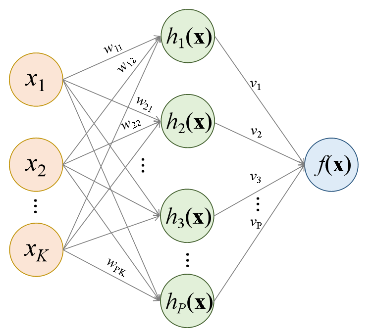
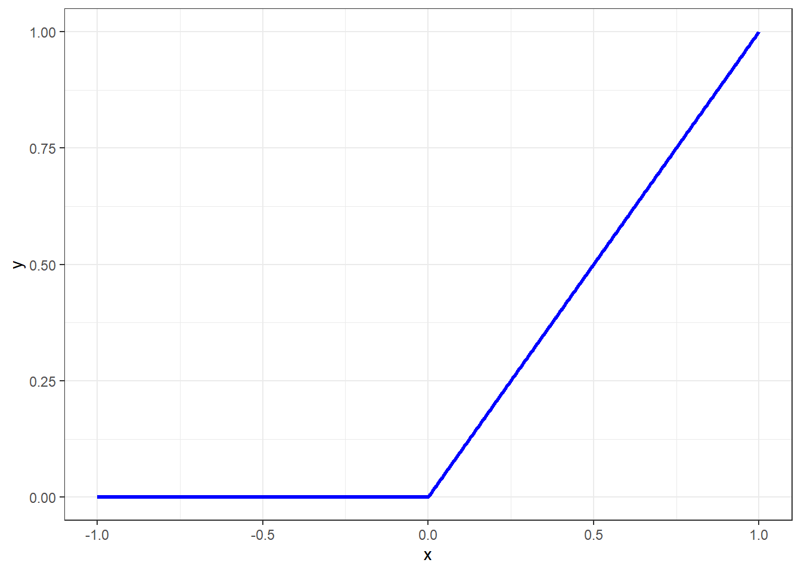

Redes neurais para regressão
Redes neurais
Definições iniciais
Seja um vetor de \(K\) variáveis regressoras \(\mathbf{x}=[x_1,x_2,\ldots,x_K]^T\), uma variável dependente ou de resposta contínua, \(y \in \mathbf{R}\) e \(N\) observações de treino disponíveis, \(\{x_1,y_1\}, \{x_2,y_2\}, \ldots, \{x_N,y_N\}\).
Uma rede neural com 1 camada oculta é ilustrada a seguir. Esta rede apresenta \(K\) variáveis preditoras ou independentes na camada de entrada, \(P\) neurônios na camada oculta, \(h_1(\mathbf{x})\), \(h_2(\mathbf{x})\), …, \(h_P(\mathbf{x})\), e entrega na camada de saída o modelo \(f(\mathbf{x})\).
Começando de trás para frente, o modelo final pode ser definido a partir da seguinte função: \[ \begin{matrix} f(\mathbf{x})=v_0 + v_1h_1(\mathbf{x}) + v_2h_2(\mathbf{x}) + \ldots + v_Ph_P(\mathbf{x}) \\ f(\mathbf{x})=v_0 + \sum_{p=1}^Pv_ph_p(\mathbf{x}) = \mathbf{v}^T\mathbf{h} \end{matrix} \] onde \(\mathbf{v} = [v_0, v_1, ..., v_P]^T\) é um vetor de pesos do modelo final na camada oculta e \(\mathbf{h} = [1, h_1(\mathbf{x}), ... h_P(\mathbf{x})]^T\) é um vetor de funções computadas na camada oculta. O \(p\)-ésimo termo \(h_p(\mathbf{x})\), \(p=1, ..., P\), da camada oculta é calculado conforme segue: \[ \begin{matrix} h_p=g(w_{p0} + w_{p1}x_1 + w_{p2}x_2 + \ldots + w_{pK}x_K) \\ h_p=g(w_{p0} + \sum_{k=1}^Kw_{pk}x_k) = g(\mathbf{w}_p^T\mathbf{x})\\ \end{matrix} \]
onde \(\mathbf{w}_p = [w_{p0}, w_{p1}, \ldots, w_{pK}]^T\) é um vetor de pesos do \(p\)-ésimo neurônio na camada de entrada e \(g(z)\) é uma função de ativação a qual deve ser selecionada de forma apropriada ao tipo de problema abordado. Por exemplo, para problemas de regressão a função de unidade linear retificada (Retified Linear Unit - ReLU) é considerada, sendo esta descrita matematicamente conforme segue. \[ g(z) = max(0,z) = \bigg\{ \begin{matrix} 0,z<0 \\ 1,z\geq0 \end{matrix} \] A função de ativação ReLu é plotada a seguir. Uma vez que no processo de otimização dos parâmetros da rede, o gradiente da função perda em relação a tais parâmetros é computado iterativamente, a função de ativação ReLU apresenta a vantagem de ter derivada nula para valores negativos de \(z\), não ativando todos os neurônios de forma concomitante, tornando os cálculos computacionais mais fáceis.

É importante esclarecer que a função ReLU deve ser utilizadas em camadas ocultas, conforme a descrição matemática aqui sugere. Ademais em problemas de regressão não se usa uma função de ativação na camada de saída, ainda de acordo com a formulação aqui exposta. Oportunamente, quando o tema classificação for abordado, outras funções de ativação serão expostas, além de adaptações necessárias no modelo.
Dadas tais considerações, pode-se escrever o modelo explícito para uma rede neural com uma camada oculta conforme segue. \[ \begin{aligned} f(\mathbf{x})=v_0 + v_1.g(w_{10} + w_{11}x_1 + w_{12}x_2 + \ldots + w_{1K}x_K)\\ + v_2.g(w_{20} + w_{21}x_1 + w_{22}x_2 + \ldots + w_{2K}x_K)\\ + \ldots + v_P.g(w_{P0} + w_{P1}x_1 + w_{P2}x_2 + \ldots + w_{PK}x_K) \end{aligned} \]
Logo, \[ \begin{matrix} f(\mathbf{x})=v_0 + v_1.g(w_{10} + \sum_{k=1}^Kw_{1k}x_k) + v_2.g(w_{20} + \sum_{k=1}^Kw_{2k}x_k) + \ldots \\ + v_P.g(w_{P0} + \sum_{k=1}^Kw_{Pk}x_k) \\ \end{matrix} \]
De forma, mais compacta, temos o modelo já exposto anteriormente. \[ \begin{matrix} f(\mathbf{x})=v_0 + \sum_{p=1}^Pv_p.g(w_{p0} + \sum_{k=1}^Kw_{pk}x_k)\\ f(\mathbf{x})=v_0 + \sum_{p=1}^Pv_ph_p(\mathbf{x}) = \mathbf{v}^T\mathbf{h}\\ \end{matrix} \]
O aprendizado profundo consiste simplesmente em uma rede neural com duas ou mais camadas ocultas.
Descida do gradiente e propagação para trás
Os parâmetros a serem estimados do modelo de rede neural consistem em \(\mathbf{v} = [v_0, v_1,v_2,\ldots,v_p]^2\) e \(\mathbf{w}_p=[w_{p0},w_{p1},w_{p2},\ldots,w_{pK}]^T\). Tomando as \(N\) observações de treino \((\mathbf{x}_i,y_i)\), \(i=1,...,N\), estima-se o modelo minimizando a função perda quadrática a seguir. \[ \min_{\{w_p\}_1^N,v} \frac{1}{2} \sum_{i=1}^{N}(y_i-f(\mathbf{x}))^2 \] onde \[ f(\mathbf{x})=v_0+\sum_{p=1}^Pv_p.g(w_{p0}+\sum_{k=1}^Kw_{pk}x_{ik}). \]
Devido a não convexidade da função perda, múltiplas soluções podem estar presentes. A otimização é realizada de forma lenta e iterativa com o algoritmo de descida do gradiente. Seja \(\mathbf{\theta}\) o vetor de todos os parâmetros da rede, \(\mathbf{\theta} = [\mathbf{v}, \mathbf{w}_0, \mathbf{w}_1, ..., \mathbf{w}_P]^T\). A fução perda pode ser reescrita conforme segue: \[ L(\theta)=\frac{1}{2} \sum_{i=1}^{N}(y_i-f_\theta(\mathbf{x}))^2 \]
O algoritmo de descida do gradiente pode ser descrito a partir dos seguintes passos:
- Defina um valor inicial \(\theta_0\) para \(\theta\).
- Itere até \(L(\theta)\) parar de decrescer ou então até um critério de parada:
- Encontre um vetor \(\delta\) de forma que \(\theta_{t+1}=\theta_t+\delta\) reduza \(L(\theta)\).
- Faça \(t \leftarrow t+1\).
O valor de \(\delta\) deve ser escolhido na direção de máximo crescimento da função perda. O algoritmo de propagação para trás (backpropagation) considera o gradiente da função perda em relação aos parâmetros da rede, isto é, \[ \nabla L(\theta_t)=\frac{\partial L}{\partial \theta} \Bigg|_{\theta=\theta_t}. \]
Como \(\nabla L(\theta_t)\), que consiste no vetor de derivadas parciais de \(L\) avaliadas em \(\theta_t\), o algoritmo de descida do gradiente busca mover o vetor \(\theta\) na direção contrária do gradiente, considerando uma taxa de aprendizagem \(\rho\) pequena para facilitar a convergência, isto é, \[ \theta_{t+1} \leftarrow \theta_t - \rho \nabla L(\theta_t) \]
A propagação para trás consiste simplesmente na aplicação da regra da cadeia de diferenciação. Como \[ L(\theta)=\sum_{i=1}^NL_i(\theta)=\frac{1}{2} \sum_{i=1}^{N}(y_i-f_\theta(\mathbf{x}))^2 \] é uma soma, o gradiente também será uma soma em \(N\). Logo, deve-se pensar na derivada de cada termo desta soma: \[ L_i=\frac{1}{2} (y_i-v_0-\sum_{p=1}^Pv_p.g(w_{p0}+\sum_{k=1}^Kw_{pk}x_{ik}))^2. \]
Considerando o termo \(v_p\), a derivada parcial da função perda pela regra da cadeia fica conforme segue: \[\ \frac{\partial L_i}{\partial v_p}=\frac{\partial L_i}{\partial f_\theta}\frac{\partial f_\theta}{\partial v_p} \]
\[ \frac{\partial L_i}{\partial v_p}=-(y_i-f_\theta(\mathbf{x}_i)).g(w_{p0}+\sum_{k=1}^Kw_{pk}x_{ik}). \]
Já derivando em relação ao termo \(w_{pk}\), tem-se: \[ \frac{\partial L_i}{\partial w_{pk}}=\frac{\partial L_i}{\partial f_\theta}\frac{\partial f_\theta}{\partial g(w_{p0}+\sum_{k=1}^Kw_{pk}x_{ik})}\frac{\partial g(w_{p0}+\sum_{k=1}^Kw_{pk}x_{ik})}{\partial (w_{p0}+\sum_{k=1}^Kw_{pk}x_{ik})} \frac{\partial (w_{p0}+\sum_{k=1}^Kw_{pk}x_{ik})}{\partial w_{pk}} \]
\[ \frac{\partial L_i}{\partial w_{pk}}=-(y_i-f_\theta(\mathbf{x}_i))v_pg'(w_{p0}+\sum_{k=1}^Kw_{pk}x_{ik})x_{ik}. \]
Pode-se observar que em ambos resultados das derivadas os resíduos \(y_i-f_\theta(\mathbf{x}_i)\) estão presentes. Ou seja, na diferenciação uma fração do resíduos é atribuída aos parâmetros a partir da regra da cadeia.
Dada a possibilidade de overfitting no processo de otimização dos parâmetros da rede, diversas estratégias são usadas. Por exemplo a regularização ou penalização rígida ou LASSO pode ser aplicada, sendo a função perda modificada conforme segue para o primeiro caso. \[ L(\theta)=\frac{1}{2} \sum_{i=1}^{N}(y_i-f_\theta(\mathbf{x}))^2 +\lambda\sum_p\theta_p^2 \]
Outra estratégia utilizada é o dropout, que consiste na remoção aleatória de uma proporção dos neurônios de uma ou mais camadas. Este processo tem, de certa forma, similaridade com a estratégia de regularização via LASSO e também com a estratégia de seleção de variáveis para o particionamento binário recursivo no algoritmo de floresta aleatória.
O processo de treinamento da rede neural envolve a definição da arquitetura da rede, isto é, o número de camadas ocultas e o número de neurônios em cada uma, além da otimização dos hiperparâmetros de encolhimento e dropout. Todos estes podem ser considerados hiperpâmetros a serem otimizados e, para tal, deve-se utilizar de validação cruzada e grid search.
Existem diversos outros tipos de redes neurais, como as redes neurais convolucionais, com grande potencial para classificação de imagens e as redes neurais recorrentes, para problemas de séries temporais, reconhecimento de fala, entre outros. O leitor é convidado a ler a bibliografia citada para mais informações.
Referências
Bishop, Christopher M., and Hugh Bishop. “Deep learning: foundations and concepts.” (2024).
Gareth, J., Daniela, W., Trevor, H., & Robert, T. (2013). An introduction to statistical learning: with applications in R. Spinger.